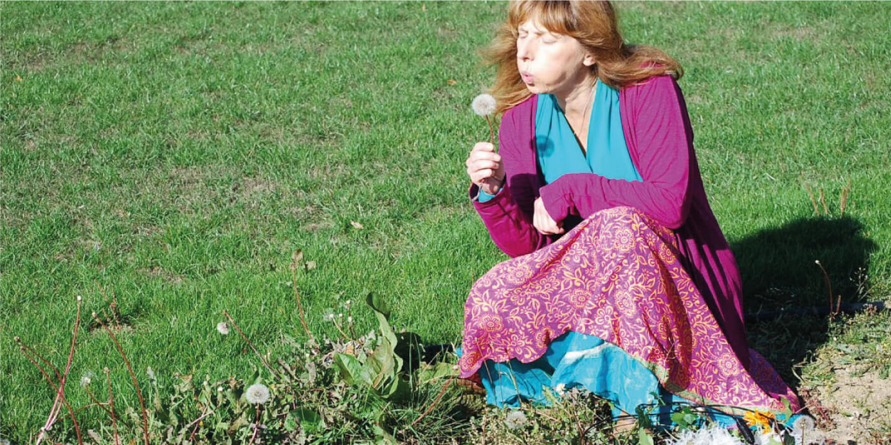

OUVERTURE DE LA SAISON
1.05.2022 AU 1.05.2022
FOND-DE-GRAS & LASAUVAGE
À PARTIR DE 11H00

1.05.2022 AU 1.05.2022
FOND-DE-GRAS & LASAUVAGE
À PARTIR DE 11H00
Après la pause hivernale nécessaire aux travaux d’entretien du matériel roulant historique et le repos bien mérité des bénévoles, le Minett Park est à nouveaux heureux de vous accueillir.
Les impressionnantes locomotives du Train 1900 emmènent les visiteurs pour une balade en pleine nature.
Les départs Pétange – Fond-de-Gras : 13h20, 14h15, 15h10, 16h15, 17h10, 18h20.
Les départs Fond-de-Gras – Pétange : 12h50, 13h25, 14h45, 15h35, 16h45, 17h40, 18h30.
Quant au train minier « Minièresbunn », il compte trois départs : à 15h00, 16h00 et 17h00, vers un impressionnant voyage au cœur de la mine.
Au buffet de la charmante gare du Fond-de-Gras, petite restauration, gâteaux maisons et rafraîchissements seront disponibles tout au long de la journée.